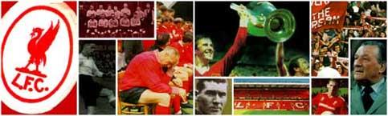

The story begins in 1878 with the formation of St Domingo's Football
Club, organised around the sporting activities of a local chapel. Football
was becoming so popular at the time that St Domingo's decided to
increase its catchment area, and in 1879 adopted the more impressive
name of Everton Football Club. Five years later, Everton began playing
their home games at Anfield. The owner of the ground was a wealthy
businessman and future Mayor of Liverpool, John Houlding, whose power
and influence in the area was reflected in his nickname "King John of
Everton".
The name of Everton therefore crops up in the early history of Liverpool,
because it was not until 1892 that Liverpool Football Club was formed.
March 1892 was a crucial month. A financial dispute involving Houlding
and fellow members of Everton over the tenancy of the ground finally
reached a point of no return, resulting in a decision to move Everton
Football Club to new premises across Stanley Park. Houlding was thus
left with a football ground, but no team to play on it. W.E. Barclay,
Houlding's friend and fellow football fanatic, suggested that a new team
be created. Houlding liked the idea so Liverpool Association Football Club
(as the club was originally known) was born.
Houlding applied immediately for the membership of the Football League
but when his application was rejected Liverpool had to settle for a
season in the more local Lancashire League. It was virtually unheard of
at the time for a city to have more than one professional football team,
and people naturally wondered where on earth Liverpool's players would
come from. John McKenna, the club's first manager provided the
answer; Scotland. All eleven players of the Liverpool team that played
it's first ever competitive match, against Higher Walton on the 3rd
September 1892, were Scottish.
In the 1893-94 season, L.F.C. was promoted to the Second Division
after only one season. Liverpool's first ever League game was away to
the now defunct Middlesbrough Ironopolis, with Malcom McVean earning
the historic accolade of scoring Liverpool's first ever League goal, in
a
2-0 victory. During the following season home gates were approaching
20,000, after very humble beginnings. The 1898-99 season saw the
arrival of the centre-half Alex Raisbeck, Liverpool's first real world-class
player to wear the famous red strip (which replaced the original blue
and white colours in 1896). In the 1900-01 season, as Queen Victoria's
lengthy reign drew to a close, Liverpool won the League Championship
for the first time. This was to be the first championship victory of many.
Currently the 18 championship victories constitute a record for any
English Club.